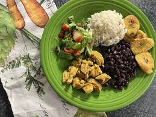
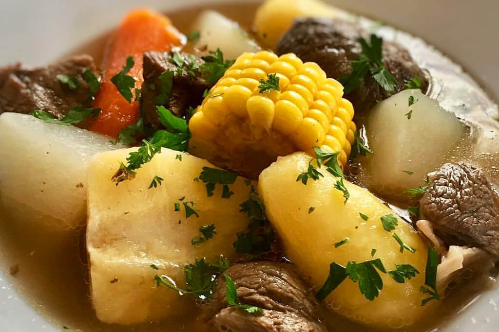
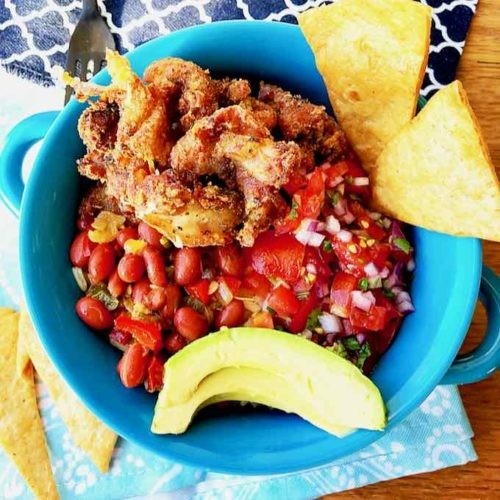

Casado, olla de carne y arroz con pollo, pura vida.

Casado
Plato fuerte
Ingredientes
- Arroz blanco y frijoles negros
- Filetes de pollo, res o pescado
- Plátano maduro
- Repollo, tomate y zanahoria
- Huevos, sal y aceite
Pasos
- Cocer el arroz y los frijoles por separado y mantenerlos calientes.
- Sazonar y cocinar la proteína elegida a la plancha.
- Freír el plátano maduro y preparar una ensalada fresca de repollo, tomate y zanahoria.
- Servir cada componente junto con un huevo frito o picado de verduras.

Olla de carne
Sopa
Ingredientes
- 1 kg de carne de res para sopa
- Yuca, papa y camote
- Chayote y zanahoria
- Elote y plátano verde
- Cebolla, ajo, culantro, agua y sal
Pasos
- Cocer la carne con cebolla, ajo, culantro y sal hasta que esté casi tierna; retirar la espuma.
- Agregar el elote, la yuca, el plátano y la zanahoria, que requieren más cocción.
- Incorporar la papa, el camote y el chayote y cocinar hasta que todos los vegetales estén tiernos.
- Rectificar la sazón y servir la carne, los vegetales y el caldo bien calientes.

Chifrijo
Arroces
Ingredientes
- 2 tazas de arroz blanco cocido
- 2 tazas de frijoles rojos cocidos
- 300 g de chicharrón en trozos
- Pico de gallo
- Aguacate, limón y tortillas
Pasos
- Calentar los frijoles con un poco de su caldo y sazonarlos al gusto.
- Freír o recalentar el chicharrón hasta que quede crujiente.
- Colocar en un tazón una base de arroz y cubrirla con frijoles y chicharrón.
- Añadir pico de gallo y aguacate; servir con limón y chips de tortilla.